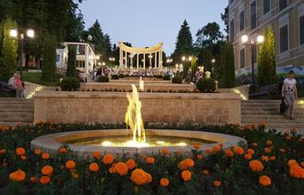
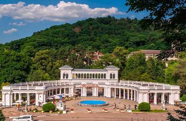
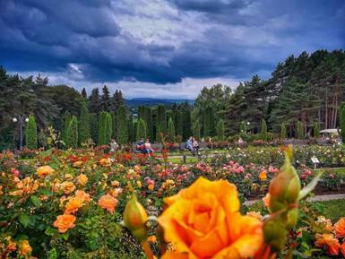
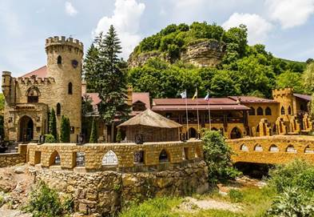

Путеводитель по Кисловодску
Официальный сайт города: https://kislovodsk-kurort.org/
В Ставропольском крае раскинулся самый крупный город среди городов Кавказских Минеральных Вод – Кисловодск.
Каждый год тысячи людей держат свой путь в это волшебное место, чтобы поправить или укрепить здоровье, потому что сама природа здесь способствует этому. Благодаря Боргустанскому и Джинальскому хребтам, в долине, где уютно расположился Кисловодск, практически нет ветра, который бы принес неприятные осадки и туманы. По статистике, на 45 пасмурных в Кисловодске приходится 141 ясный день.
Среди всех курортов Кавминвод Кисловодск располагается на самой большой высоте над уровнем моря – от 800 до 1000 м. Это значит, что в городе можно дышать чистым горным воздухом, чрезвычайно полезным для здоровья. Благоприятные климатические условия – это, пожалуй, главное, что манит отдыхающих в Кисловодске. Кисловодск располагается в живописной долине посреди гор. Погода в Кисловодске способствует хорошему спокойному отдыху.
Кисловодск славится своими минеральными источниками, которых здесь семь. Воду используют в основном для лечебных ванн, а также для питьевого лечения желудочно-кишечных заболеваний.
Кисловодск – очень живописный зеленый город, усыпанный скверами, аллеями и цветниками. Гордость города - это, несомненно, Курортный парк. Вокруг Кисловодска раскинулись горные склоны с их шикарными субальпийскими лугами. В Кисловодске действуют около 60 санаториев и гостиниц. Половина местного населения (а проживает в городе около 125 тыс. человек) задействована в сфере обслуживания отдыхающих. В городе с каждым годом все шире развивается сфера развлечений.
Дополнительные информационные ресурсы, посвященные городу:
Общие сведения о городе:
Историческая справка:
В начале 18 века на месте нынешнего Кисловодска земли пустовали – это была приграничная территория между небольшими кавказскими народами. В конце 18 века немецкий ученый, находящийся на русской службе Пётр-Симон Паллас обнаружил здесь источник нарзана и провел первые его исследования, выявив его уникальные целебные свойства. А первым курортником Кисловодска считается русский военный командир граф И.Морков, он уже в 1798 году, приехав сюда с семьей, первым принимал ванны, лечась от астмы. Таким образом, история Кисловодска неразрывно связана с освоением источников нарзана - углекислой минеральной воды. Первыми русскими жителями города стали казаки и русские солдаты, жившие в построенной военной крепости около Кислого колодца, т.е. около источника. Сейчас на территории бывшей крепости создан краеведческий музей «Крепость». Врачи и ученые тщательно исследовали найденные здесь лечебные воды по составу и по воздействию их на организм человека. Затем началось применение минеральной воды на практике – Кислые Воды были объявлены лечебно-курортной зоной государственного значения.
Это случилось в 1803 году, который теперь считается годом рождения Кисловодска. На лечение стали приезжать первые отдыхающие, которые поначалу останавливались или в военных палатках, или в калмыцких юртах, а лечебные ванны устраивались в вырытых близ источника углублениях или в деревянных емкостях. Для развития города, его застройки и благоустройства много сделал генерал Ермолов – командующий войсками на Кавказе. При нем и силами его гарнизона был заложен Курортный парк – в этой практически безлесой местности началась посадка деревьев и кустарников. По просьбе Ермолова для организации строительства курорта были присланы итальянские архитекторы братья Джованни (Иван) и Джузеппе (Иосиф) Бернардацци, которые до этого принимали участие в строительстве Исаакиевского собора в Санкт-Петербурге. Братья Бернардацци в основном занимались строительством Пятигорска, но в Кисловодске они построили уникальное здание Ресторации, к сожалению утраченное в 1944 году.
Непосредственно над источником было возведено двухэтажное сооружение с колоннадой и лестницей, в котором размещались ресторан с танцевальным залом и помещения для отдыхающих. Под лестницей размещался таинственный грот. Сейчас здесь оборудована Лермонтовская площадка, а в гроте помещена скульптура Демона.
В 1820 и в 1829 году в городе останавливался А.С.Пушкин, поселившись в здании Ресторации. Город рос и застраивался сооружениями гражданской и курортной архитектуры. К середине 19 века была построена Нарзанная галерея, открыт Курортный бульвар, строились купеческие и дворянские дома. Позднее были проложены транспортные магистрали – шоссе и железная дорога, которые связали Кисловодск к концу 19 века со всеми центральными городами России. И хотя поездка на поезде в Кисловодск была невероятно дорогой, она считалась очень модной и престижной. Количество отдыхающих увеличивалось, а это требовало дальнейшего развития города. К концу 19 века был построен Курортный зал и железнодорожный вокзал Кисловодска – сейчас это действующие памятники архитектуры. Начал работать завод по разливу нарзана в стеклянную тару. Начало 20 века ознаменовалось постройками знаменитой Колоннады и Главных Нарзанных ванн. В это время Кисловодск был одним из самых посещаемых русской аристократией местом отдыха. Многие деятели русской культуры побывали в этих удивительных местах. Пушкин и Лермонтов, Чехов и Лев Толстой, Есенин и Маршак, а вот писатель Солженицин здесь родился.
После революции Кисловодск стал развиваться как здравница союзного значения. В 20-30-х годах 20 века началось массовое строительство санаториев и профилакториев для лечения и отдыха советских граждан. Но Великая Отечественная война прервала активное становление Кисловодского курорта. Вначале курортные учреждения были перепрофилированы в госпитали, а потом в город вошли немцы. После освобождения города и завершения войны, в 50-е годы город был восстановлен и Кисловодская здравница начала работать в полном объеме.
Карта города

Вид со спутника

Фотогалерея Кисловодска
|
Достопримечательность |
Фото |
|
Кисловодский национальный курортный парк является вторым по величине во всей Европе, он занимает площадь более 950 га. Вся территория условно разделена на три части: верхнюю, среднюю и нижнюю. Здесь очень много памятных уголков: знаменитая Долина роз, каскадная лестница, легендарный «храм воздуха». Гостей ждут интересные музеи, гроты, скалы, водопады, смотровые площадки. В парке никогда не бывает скучно ни детям, ни взрослым. На территории растет около трех сотен различных видов кустарников и деревьев. На ветвях резвятся белки, а в чаще живут зайцы и лисы. Для оздоровительных пешеходных прогулок предусмотрены специальные маршруты |
|
|
С северной стороны национального Кисловодского парка находится красивая лестница, оформленная в стиле античной классики. В теплое время года вдоль ступеней каскадами спускаются фонтаны. Сама лестница состоит из двух частей, разделенных террасой в середине подъема. Венчает конструкцию колоннада с просторной смотровой площадкой, откуда открывается восхитительная панорама на город. Особенно красиво каскадная лестница выглядит в темное время суток, когда включается подсветка. |

|
|
Открытие колоннады состоялось в 1913 году. Двухъярусное полукруглое сооружение выполнено в неоклассическом стиле. Над проектом работал талантливый архитектор Семенов, в задумках которого было разместить на верхнем ярусе летний ресторан. Сегодня через роскошную колоннаду сотни людей ежедневно входят в Кисловодский парк. Более чем за сто лет существования конструкция сумела сохранить первоначальную величественность и грандиозность. |

|
|
В центре Кисловодского парка раскинулась грандиозная клумба, на которой растет более 80 редких сортов роз. Гигантский розарий ведет свою историю с первой половины 19 века: солдаты местного гарнизона вручную привозили на тележках чернозем, так как почва парка не подходила для разведения элитных цветов. За состоянием растений следят опытные садоводы и профессиональные ландшафтные дизайнеры. Настоящее благоухающее великолепие встречает гостей в самый разгар лета, в июле и августе. На фоне цветущего розария получаются прекрасные фотографии. Срывать цветы строго запрещено. |
 |
|
На северо-западной окраине Кисловодска есть необычная природная достопримечательность: скала с красивым названием «Замок коварства и любви». Издалека скалы, действительно, напоминают развалины старого замка с башнями и зубцами, а, если подойти ближе, в обрывистых склонах вырисовываются очертания человеческих лиц. С этим местом связана трагичная история любви, где жених с невестой были вынуждены бежать от родственников, сопротивлявшихся их отношениям, и, будучи загнанными на вершину скалы, прыгнули вместе вниз. У подножия утеса в начале 20 века был построен одноименный гостиничный комплекс, который действует по сей день и привлекает внимание своим колоритным исполнением. |

|
Достопримечательности Кисловодска.
Гимн Кисловодска:
Город солнца, живой воды,
Синих гор, неземной красы,
Здравствуй, Эльбрус седой,
Здравствуй, город родной,
Кисловодск, мы с тобой на ты.
Вспоминаю я каждый сон -
В Кисловодске с тобой вдвоем,
Дивный воздух пьянил,
Нежный взгляд твой манил.
Эту песню мы вновь споём.
Ах, Кисловодск, любовь моя!
Сказочный мир здесь вижу я
Ах, ты Долина роз моя,
Я у тебя в плену всегда.
У пруда в расставания час
Поклялись мы любить Кавказ.
А монетка давно
Опустилась на дно,
Приглашая нас ещё раз.
И опять уж который раз
Я встречаю тебя, Кавказ.
И опять я влюблён
И опять вижу сон,
Как идём мы по парку вдвоем.
Ах, Кисловодск, любовь моя!
Сказочный мир здесь вижу я
Ах, ты Долина Роз моя,
Я у тебя в плену всегда.
Видео о Кисловодске:
https://www.youtube.com/watch?v=mFlIhy0bpDI
https://www.youtube.com/watch?v=iKP5mINDjME